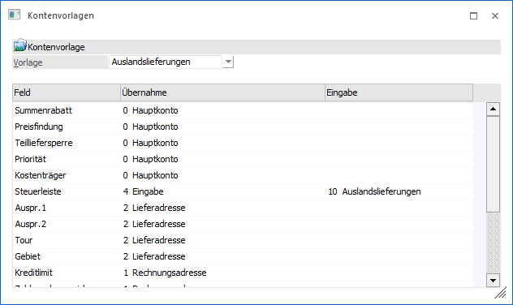

Im Menüpunkt…
1 WinLine FAKT
1 Stammdaten
1 Belegstammdaten
1 Kontenvorlagen
… können Vorlagen definiert werden. Durch diese besteht die Möglichkeit, die Herkunft von ausgewählten Feldern für die Erstellung von neuen Belegen zu definieren.
Hinweis
Selbst definierte Kontenvorlagen können in weiterer Folge in den Belegarten (Register "Optionen") hinterlegt werden. Sollte dort "Standard" definiert worden sein, so greifen die Standardvorgaben, welche der Beschreibung der Spalte "Feld" zu entnehmen sind.

Ø Vorlage
An dieser Stelle kann eine bestehende Vorlage aus der Auswahlliste gewählt und per Taste "Enter" geladen werden. Die Anlage von Kontenvorlagen erfolgt durch die Eingabe eines noch nicht bestehenden Namens.
Tabelle "Vorbelegungen"
In der Tabelle stehen die folgenden Spalten zur Verfügung.
Ø Feld
In dieser Spalte werden die zu definierenden Felder aufgelistet. Die Standardeinstellungen lauten wie folgt:
ü Summenrabatt
ü Preisfindung
ü Teillieferung
ü Priorität
ü Kostenträger (für Maskierung aus der Belegart im Belegkopf)
ü Steuerleiste
Hinweis
Bei diesen Feldern ist die Standardvorbelegung das "Hauptkonto"
ü Auspr.1
ü Auspr.2
ü Tour
ü Gebiet
ü Lagerort
Hinweis
Bei diesen Feldern ist die Standardvorbelegung die Lieferadresse.
ü Kreditlimitprüfung (Warn-/Sperrtexte, Warn-/Sperrbeträge)
ü OP-Kennzeichen
Hinweis
Bei diesen Feldern ist die Standardvorbelegung die Rechnungsadresse.
ü Vertreter
ü Belegkopftexte
Hinweis
Bei diesen Feldern ist die Standardvorbelegung "Lieferadresse wenn abw. Rechnungsempfänger".
Ø Übernahme
An dieser Stelle kann die Herkunft / Quelle definiert werden, woher der Wert für das Feld kommen soll. Hierfür stehen folgende Varianten zur Verfügung:
ü 0 -Hauptkonto
ü 1- Rechnungsadresse
ü 2 - Lieferadresse
ü 3 - Lieferadresse wenn abw. Rechnungsempfänger
ü 4 - Eingabe
Ø Eingabe
Sobald in der Spalte "Übernahme" die Variante "4 - Eingabe" gewählt wurde, kann an dieser Stelle die entsprechende Eingabe erfolgen.
Tabellenbuttons

Ø Ausgabe Excel
Durch Anwahl des Buttons "Ausgabe Excel" wird der Inhalt der Tabelle an Microsoft Excel übergeben.
Ø Tabelleneinstellungen speichern
Die Spalten einer Tabelle können grundsätzlich an beliebige Positionen verschoben, bzw. in der Breite entsprechend angepasst werden. Durch Anwahl des Buttons "Tabelleneinstellungen speichern" werden die Einstellungen benutzerspezifisch gespeichert und bei dem nächsten Aufruf des Programmpunktes wieder vorgeschlagen.
Ø Gesamteinstellungen speichern
Im Gegensatz zu "Tabelleneinstellungen speichern" können mit "Gesamteinstellungen speichern" mehrere Tabellenaufbauten gespeichert und nach Wunsch geladen werden. Zusätzlich werden Sonderfunktionen der Tabelle (z.B. "Spalte gruppieren") ebenfalls bei der Speicherung bedacht.
Buttons

Ø Ok
Durch Anwahl des Buttons "Ok" bzw. der Taste F5 werden die Änderungen gespeichert bzw. die neue Kontenvorlage erzeugt.
Ø Ende
Durch Drücken des Buttons "Ende" bzw. der Taste ESC wird das Fenster geschlossen und alle nicht gespeicherten Eingaben verworfen.
Ø Löschen
Mit dem Button "Löschen" können bestehende Vorlagen gelöscht werden.